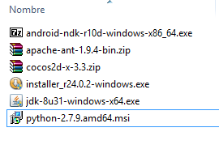
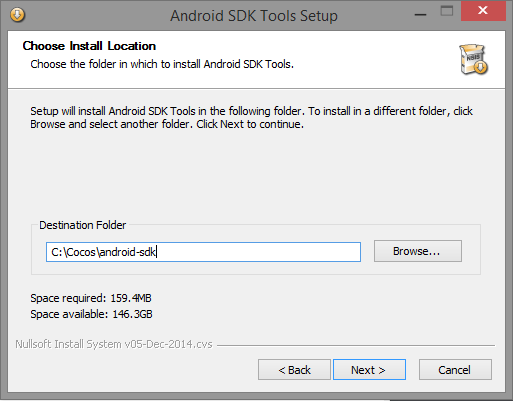
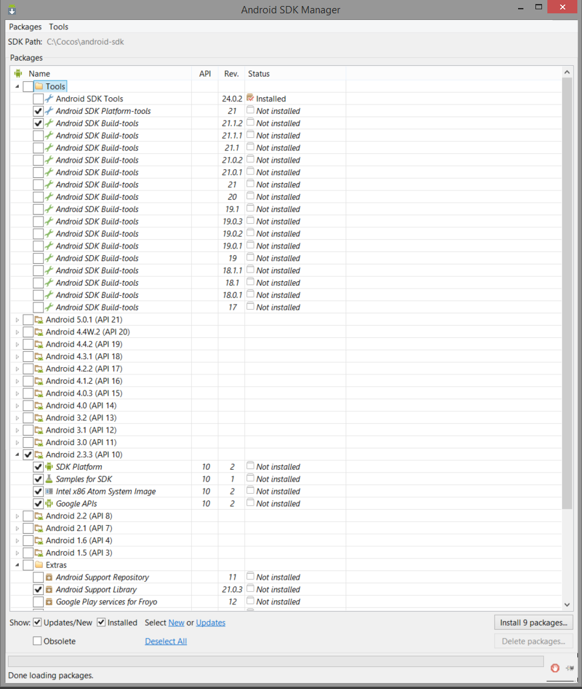
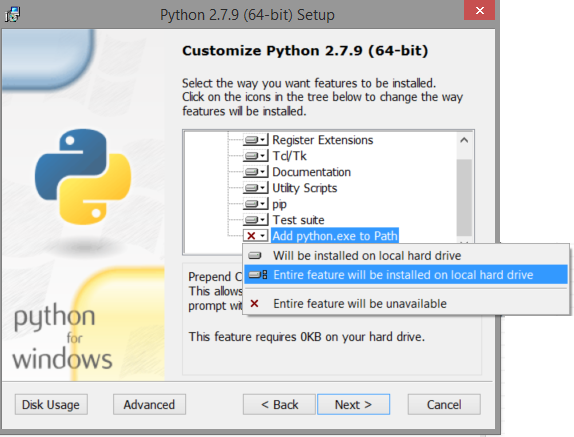
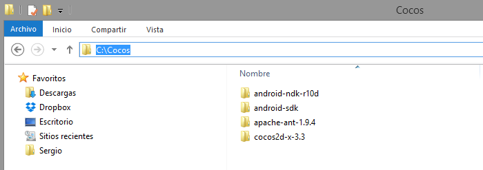
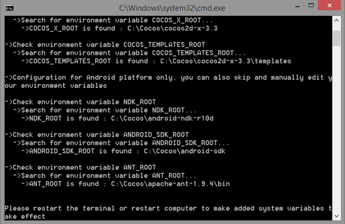
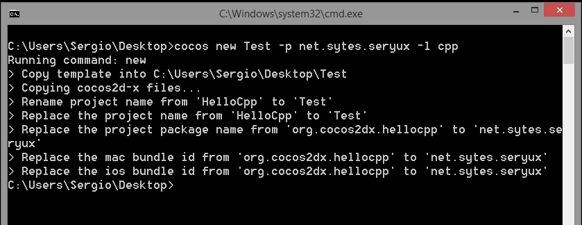

En este capítulo vamos a hacer el set up de nuestro entorno de trabajo. Para desarrollar aplicaciones en cocos2d-x, yo utilizaré windows 8.1 y los IDEs: Visual Studio (vale en su versión express 2012 - 2013) y Eclipse. Para mayor comodida todos los tutoriales se realizaran utilizando Visual Studio y finalmente se mostrará cómo compilar y lanzar la aplicación resultante en android desde eclipse y linea de comandos.
Comenzaremos descargando todo lo neceserao para empezar a utilizar cocos2d.
Una vez tenemos todo descargado. (Aunque auí aparecca v3.3 de cocos, los tutoriales se mantienen actualizados para su ultima versión)

Comenzamos con la instalación de las herramientas y configurción de las mismas. Para comenzar, instalamos el JDK (siguiente siguiente, sin mayor complicación). Yo crearé una carpeta llamada Cocos en C:\Cocos para meter ahí todos los paquetes necesarios.
Comenzaremos descomprimiendo el zip que contiene el codigo de cocos2d-x, luego el de ant, tambien haremos doble click sobre el paquete de android-ndk y comezará a autoextraerse. Cuando haya terminado movemos los paquetes recien extraidos a nuestra carpeta C:\Cocos. A continuación instalamos el sdk de android en el mismo directorio.

Tras esta ultima instalación, iniciamos el android sdk y descargamos lo que veremos a continuación: (SDK tools + API 10)

Continuamos con la instalaión, ahora le toca a python. Todo "siguiente" hasta llegar a la opción de la imagen donde seleccionaremos "Entire feature will be installed on local hard drive" de forma que python sea añadido al path de nuestro sistema.

Llegados a este punto nuestra carpeta C:\Cocos> debe tener un aspecto similar a este, si hemos seguido todos los pasos.

Ahora toca configurar cocos2d-x, para ello vamos a la carpeta C:\Cocos\cocos2d-x-3.3 y ejecutamos el script setup.py usando python. El scrip nos pedira el path al sdk, ndk y ant. por fortuna ya lo tenemos todo. Un pequeño apunte, a la hora de darle la ruta de ant, debemos indicarle la ruta de C:\Cocos\apache-ant-1.9.4\bin como vemos en la imagen del terminal.

Para que la configuración haga efecto debemos reiniciar el quipo pues lo que realmente hace este script, es añadir al path del sistema (variables de entorno) las rutas de esos programas.
Una vez instalado y configurado correctamente todo lo anterior solo tenemos que abrir una linea de comandos, yo por ejemplo la abrí desde el escritorio y escribí el siguiente comando cocos new <NombreProyecto> -p <NombrePaqueteAndroid> -l cpp el -l cpp indica que usaremos C++ no lua o javascript.

Ya tenemos el proyecto creado, basta con entrar al directorio "Test" en mi caso pues así llamé al proyecto y ver que se han creado dentro de él varias carpetas que describiré a continuación: